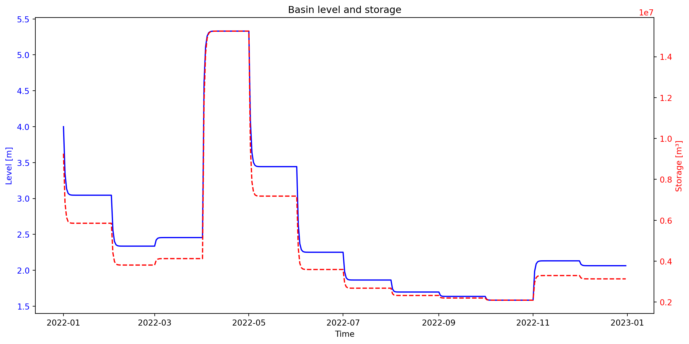
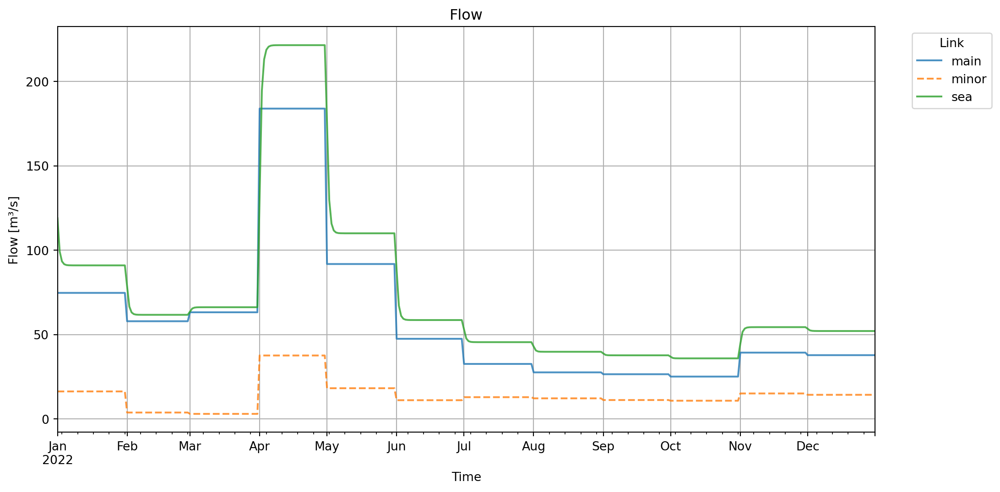

from ribasim import run_ribasimGetting started
1 Introduction
Welcome to Ribasim! This tutorial will help you get started with the basics of using Ribasim for river basin simulation. In this tutorial, the schematization of models is done in Python using the Ribasim Python package. The Ribasim Python package (named ribasim) simplifies the process of building, updating, and analyzing Ribasim model programmatically. It also allows for the creation of entire models from base data, ensuring that your model setup is fully reproducible.
To run this tutorial locally, install the latest release of Ribasim as documented in the installation guide. Some of the tutorials use a Python package that must be installed separately, Plotly.
1.1 Learning objectives
In this tutorial, we will focus on a fictional river basin called Crystal, which will serve as our case study. The guide is divided into different modules, each covering various scenarios. These include simulating natural flow, implementing reservoirs, and observing the impact of other structures. While not all node types and possibilities will be demonstrated, the focus will be on the most commonly used and significant situations. By the end of the tutorial, users will be able to:
- Set up a basic Ribasim model: Understand how to create a new model for a river basin using the Ribasim Python package.
- Evaluate the impact of demands: Introduce water demand (such as irrigation) and assess their effects on the river basin.
- Modify and update models: Learn how to update existing models with new data and changes.
- Analyze simulation results: Use built-in tools to analyze and interpret the results of your simulations.
2 Crystal River Basin
We will examine a straightforward example of the Crystal river basin, which includes a main river and a single tributary flowing into the sea (see Figure 1). Between 2014 and 2023 an average discharge of \(44.45 \text{ m}^3/\text{s}\) is measured at the confluence. In this module, the basin is free of any activities, allowing the model to simulate the natural flow. The next step is to include a demand (irrigation) that taps from a canal out of the main river.

After this module the user will be able to:
- Build a river basin model from scratch
- Understand the functionality of the Demand and Basin nodes
- Generate overview of results
- Evaluate the simulation results
2.1 Natural flow
2.1.1 Import packages
Before building the model we need to import some modules. Open your favorite Python editor (Visual Studio Code, Jupyter, …) and create a new script or notebook and name it Crystal_1.1 and save it into your model folder Crystal_Basin. Import the following modules in Python:
from pathlib import Path
import matplotlib.pyplot as plt
import pandas as pd
from ribasim import Model, Node
from ribasim.nodes import basin, flow_boundary, tabulated_rating_curve
from shapely.geometry import Point2.1.2 Setup paths and model configuration
Reference the paths of the Ribasim installation and model directory and define the time period. The used simulation period is defined by the starttime and endtime of the model, not by the input timeseries. For now we will look into the period from 2022-01-01 until 2023-01-01 for the model simulation. The coordinate reference system (CRS) is also required, and set to EPSG:4326, which means all coordinates are interpreted as latitude and longitude values. The CRS is important for correctly placing Ribasim models on the map, but since this is a fictional model, it is not important.
base_dir = Path("crystal-basin")
starttime = "2022-01-01"
endtime = "2023-01-01"
model = Model(
starttime=starttime,
endtime=endtime,
crs="EPSG:4326",
)2.1.3 FlowBoundary nodes
The Crystal basin consists of two inflow points, the tributary and the main Crystal river, we will call them Minor and Main respectively. This is a monthly inflow timeseries from 2014 to 2023. The used simulation period is defined by the starttime and endtime of the model, not by the input timeseries.
data = pd.DataFrame({
"time": pd.date_range(start="2022-01-01", end="2023-01-01", freq="MS"),
"main": [74.7, 57.9, 63.2, 183.9, 91.8, 47.5, 32.6, 27.6, 26.5, 25.1, 39.3, 37.8, 57.9],
"minor": [16.3, 3.8, 3.0, 37.6, 18.2, 11.1, 12.9, 12.2, 11.2, 10.8, 15.1, 14.3, 11.8]
}) # fmt: skip
data["total"] = data["minor"] + data["main"]
display(data)
# Average and max inflow of the total inflow data over 2022
print("Average inflow [m3/s]:", data["total"].mean())
print("Maximum inflow [m3/s]:", data["total"].max())
main = model.flow_boundary.add(
Node(1, Point(0.0, 0.0), name="main"),
[
flow_boundary.Time(
time=data.time,
flow_rate=data.main,
)
],
)
minor = model.flow_boundary.add(
Node(2, Point(-3.0, 0.0), name="minor"),
[
flow_boundary.Time(
time=data.time,
flow_rate=data.minor,
)
],
)| time | main | minor | total | |
|---|---|---|---|---|
| 0 | 2022-01-01 | 74.7 | 16.3 | 91.0 |
| 1 | 2022-02-01 | 57.9 | 3.8 | 61.7 |
| 2 | 2022-03-01 | 63.2 | 3.0 | 66.2 |
| 3 | 2022-04-01 | 183.9 | 37.6 | 221.5 |
| 4 | 2022-05-01 | 91.8 | 18.2 | 110.0 |
| 5 | 2022-06-01 | 47.5 | 11.1 | 58.6 |
| 6 | 2022-07-01 | 32.6 | 12.9 | 45.5 |
| 7 | 2022-08-01 | 27.6 | 12.2 | 39.8 |
| 8 | 2022-09-01 | 26.5 | 11.2 | 37.7 |
| 9 | 2022-10-01 | 25.1 | 10.8 | 35.9 |
| 10 | 2022-11-01 | 39.3 | 15.1 | 54.4 |
| 11 | 2022-12-01 | 37.8 | 14.3 | 52.1 |
| 12 | 2023-01-01 | 57.9 | 11.8 | 69.7 |
Average inflow [m3/s]: 72.62307692307692
Maximum inflow [m3/s]: 221.52.1.4 Basin node (confluence)
To schematize the confluence from the tributary we will use the Basin node. The node by itself portrays as water storage with a certain volume of water and can be used for different purposes, such as a reservoir, river reach, lake or in this case a confluence. Figure 2 visualizes a cross section of the confluence point in our model.

Table 1 shows the input data for the Basin node profile.
| Area [\(\text{m}^2\)] | Level [\(\text{m}\)] |
|---|---|
| \(672000.0\) | \(0.0\) |
| \(5600000.0\) | \(6.0\) |
Whilst in this case the level starts at \(0.0\) and therefore happens to be the same as the depth, it should never be interpreted as a depth. All water levels in Ribasim are assumed to be with respect to a shared reference datum, like mean sea level (MSL). The first water level in the profile is the height of the Basin bottom above this reference datum.
To specify the Basin profile, the following code is used:
confluence = model.basin.add(
Node(3, Point(-1.5, -1), name="confluence"),
[
basin.Profile(area=[672000, 5600000], level=[0, 6]),
basin.State(level=[4]),
basin.Time(time=[starttime, endtime]),
],
)2.1.5 TabulatedRatingCurve
In the previous step we implemented a Basin node that functions as a confluence. Conceptually, the Basin acts as a store of water, accumulating inflows and then releasing them. A Basin cannot directly connect to another Basin, because the rules for water exchange between them need to be defined. Connector nodes take care of this. The first such node we introduce is the TabulatedRatingCurve. It defines a relation between the water level (\(h\)) in the Basin and the outflow (\(Q\)) from the Basin. This setup mimics the behavior of a gate or spillway, allowing us to model how varying water levels influence flow rates at the confluence.
As the two inflows come together at the confluence, we expect, as mentioned above, a discharge average of \(44.45 \text{ m}^3/\text{s}\). It is therefore expected that the confluence Basin goes towards a level where the outflow is equal to the inflow via the rating curve. Only then is the confluence Basin in equilibrium. The maximum depth of the river is \(6 \text{ m}\), and the maximum inflow is \(221.5 \text{ m}^3/\text{s}\) The \(Q(h)\) relationship in Table 2 allows such inflows with reasonable water levels.
| Water Level (\(h\)) [\(\text{m}\)] | Outflow (\(Q\)) [\(\text{m}^3/\text{s}\)] |
|---|---|
| \(0.0\) | \(0.0\) |
| \(2.0\) | \(50.0\) |
| \(5.0\) | \(200.0\) |
In Ribasim, the \(Q(h)\) relation is a piecewise linear function, so the points in between will be linearly interpolated. Figure 3 illustrates the visual process and shows a progressive increase in discharge with rising water levels. In this case this means:
- At level \(0.0\): No discharge occurs. This represents a condition where the water level is too low for any flow to be discharged.
- At level \(2.0\): Discharge is \(50.0 \text{ m}^3/\text{s}\). This is a bit above the average discharge rate, corresponding to the water level where normal flow conditions are established.
- At level \(5.0\): Discharge rate reaches \(200.0 \text{ m}^3/\text{s}\). This discharge rate occurs at the water level during wet periods, indicating higher flow capacity.

Taking this into account, add the TabulatedRatingCurve as follows:
weir = model.tabulated_rating_curve.add(
Node(4, Point(-1.5, -1.5), name="weir"),
[
tabulated_rating_curve.Static(
level=[0.0, 2, 5],
flow_rate=[0.0, 50, 200],
)
],
)2.1.6 Terminal node
Finally all the water will discharge into the sea. We schematize this with the Terminal node, as it portrays the end point of the model, that can receive but not give water. Besides the node number/name and location, no further input is needed.
sea = model.terminal.add(Node(5, Point(-1.5, -3.0), name="sea"))2.1.7 Defining links
Implement the connections (links) between the nodes.
model.link.add(main, confluence, name="main")
model.link.add(minor, confluence, name="minor")
model.link.add(confluence, weir)
model.link.add(weir, sea, name="sea")2.1.8 Visualization and model execution
Plot the schematization.
model.plot();Write the model configuration to the TOML file. Name the output file Crystal-1/ribasim.toml:
toml_path = base_dir / "Crystal-1/ribasim.toml"
model.write(toml_path)
cli_path = "ribasim"After running model.write a subfolder Crystal-1 is created, which contains the model input data and configuration:
- ribasim.toml: The model configuration
- database.gpkg: A GeoPackage containing the network geometry and input data of the nodes used.
Now run the model. You can open a terminal and run it from there. For example:
ribasim Crystal-1/ribasim.tomlFrom Python you can run it with:
run_ribasim(toml_path)┌ Info: Starting a Ribasim simulation.
│ toml_path = "crystal-basin/Crystal-1/ribasim.toml"
│ cli.ribasim_version = "2025.5.0"
│ starttime = 2022-01-01T00:00:00
│ endtime = 2023-01-01T00:00:00
└ threads = 1
Simulating 0%| | ETA: N/A
Simulating 1%|▋ | ETA: 1:36:14
Simulating 9%|███▌ | ETA: 0:14:25
Simulating 16%|██████▌ | ETA: 0:07:18
Simulating 25%|█████████▉ | ETA: 0:04:18
Simulating 26%|██████████▎ | ETA: 0:04:06
Simulating 33%|█████████████▏ | ETA: 0:02:53
Simulating 35%|█████████████▉ | ETA: 0:02:40
Simulating 42%|████████████████▊ | ETA: 0:01:57
Simulating 50%|███████████████████▉ | ETA: 0:01:26
Simulating 52%|████████████████████▊ | ETA: 0:01:18
Simulating 59%|███████████████████████▋ | ETA: 0:00:59
Simulating 67%|██████████████████████████▉ | ETA: 0:00:42
Simulating 75%|██████████████████████████████▏ | ETA: 0:00:28
Simulating 83%|█████████████████████████████████▍ | ETA: 0:00:17
Simulating 87%|██████████████████████████████████▊ | ETA: 0:00:13
Simulating 93%|█████████████████████████████████████▍ | ETA: 0:00:06
[ Info: Computation time: 33 seconds, 959 milliseconds
[ Info: The model finished successfully.By default it will search for ribasim in the PATH, but you can supply the cli_path keyword argument which points to the ribasim executable: run_ribasim(toml_path, cli_path="bin/ribasim/ribasim.exe"). Use run_ribasim(version=True) to check the version.
2.1.9 Post-processing results
Read the Arrow files and plot the simulated flows from different links and the levels and storages at our confluence point:
df_basin = pd.read_feather(base_dir / "Crystal-1/results/basin.arrow")
# Create pivot tables and plot for Basin data
df_basin_wide = df_basin.pivot_table(
index="time", columns="node_id", values=["storage", "level"]
)
# Plot level and storage on the same graph with dual y-axes
fig, ax1 = plt.subplots(figsize=(12, 6))
# Plot level on the primary y-axis
color = "b"
ax1.set_xlabel("Time")
ax1.set_ylabel("Level [m]", color=color)
ax1.plot(df_basin_wide.index, df_basin_wide["level"], color=color)
ax1.tick_params(axis="y", labelcolor=color)
# Create a secondary y-axis for storage
ax2 = ax1.twinx()
color = "r"
ax2.set_ylabel("Storage [m³]", color="r")
ax2.plot(df_basin_wide.index, df_basin_wide["storage"], linestyle="--", color=color)
ax2.tick_params(axis="y", labelcolor=color)
fig.tight_layout() # Adjust layout to fit labels
plt.title("Basin level and storage")
plt.show()
The figure above shows the storage and levels in the Basin node.
To accurately represent the relationship between water levels and discharge rates at this confluence, a TabulatedRatingCurve is used. This setup mimics the behavior of a gate or spillway, allowing us to model how varying water levels influence flow rates at the confluence. Since the basin node is functioning as a confluence rather than a storage reservoir, the simulated water levels and storage trends will closely follow the inflow patterns. This is because there is no net change in storage; all incoming water is balanced by outgoing flow.
# Plot flow data
# Read the flow results
df_flow = pd.read_feather(base_dir / "Crystal-1/results/flow.arrow")
# Add the link names and then remove unnamed links
df_flow["name"] = model.link.df["name"].loc[df_flow["link_id"]].to_numpy()
df_flow = df_flow[df_flow["name"].astype(bool)]
# Create a pivot table
pivot_flow = df_flow.pivot_table(index="time", columns="name", values="flow_rate")
line_styles = ["-", "--", "-", "-."]
num_styles = len(line_styles)
fig, ax = plt.subplots(figsize=(12, 6))
for i, column in enumerate(pivot_flow.columns):
pivot_flow[column].plot(
ax=ax, linestyle=line_styles[i % num_styles], linewidth=1.5, alpha=0.8
)
# Set labels and title
ax.set_xlabel("Time")
ax.set_ylabel("Flow [m³/s]")
ax.legend(bbox_to_anchor=(1.15, 1), title="Link")
plt.title("Flow")
plt.grid(True)
plt.show()
The figure above shows the discharges in \(\text{m}^3/\text{s}\) on each link.
Link (3,4) represents the flow from the confluence to the TabulatedRatingCurve and link (4,5) represents the flow from the TabulatedRatingCurve to the Terminal. Both show the same discharge over time. Which is expected in a natural flow environment, as what is coming into the confluence must come out.